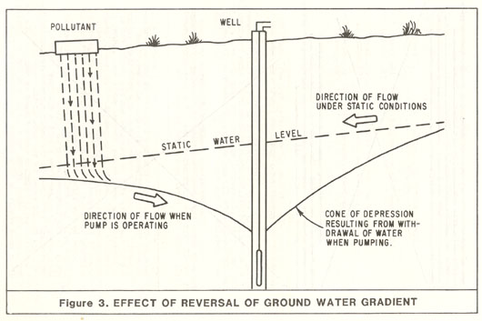

CHAPTER II. STANDARDS
Part II Construction
Section 8. Well Location With Respect to Pollutants and Contaminants, and
Structures.
- Separation. All water wells shall be located an adequate horizontal
distance from known or potential sources of pollution and contamination.
Such sources include, but are not limited to:
- sanitary, industrial, and storm sewers;
- septic tanks and leachfields;
- sewage and industrial waste ponds;
- barnyard and stable areas;
- feedlots;
- solid waste disposal sites;
- above and below ground tanks and pipelines for storage and conveyance of
petroleum products or other chemicals; and,
- storage and preparation areas for pesticides, fertilizers, and other
chemicals.
Consideration should also be given to adequate separation from sites or areas
with known or suspected soil or water pollution or contamination.
The following horizontal separation distances are generally considered
adequate where a significant layer of unsaturated, unconsolidated sediment
less permeable than sand is encountered between ground surface and
groundwater. These distances are based on present knowledge and past
experience. Local conditions may require greater separation distances to
ensure groundwater quality protection.
Potential Pollution
or
Contamination Source |
Minimum Horizontal
Separation Distance Between
Well and Known or
Potential Source |
| Any sewer (sanitary, industrial, or storm; main or lateral) |
50 feet |
| Watertight septic tank or subsurface sewage leaching field |
100 feet |
| Cesspool or seepage pit |
150 feet |
| Animal or fowl enclosure |
100 feet |
If the well is a radial collector well, minimum separation distances shall
apply to the furthest extended point of the well.
Many variables are involved in determining the "safe" separation distance
between a well and a potential source of pollution or contamination. No set
separation distance is adequate and reasonable for all conditions.
Determination of the safe separation distance for individual wells requires
detailed evaluation of existing and future site conditions.
Where, in the opinion of the enforcing agency adverse conditions exist, the
above separation distances shall be increased, or special means of
protection, particularly in the construction of the well, shall be provided,
such as increasing the length of the annular seal.
Lesser distances than those listed above may be acceptable where physical
conditions preclude compliance with the specified minimum separation
distances and where special means of protection are provided. Lesser
separation distances must be approved by the enforcing agency on a case-by-case basis.
- Gradients. Where possible a well shall be located up the groundwater
gradient from potential sources of pollution or contamination. Locating
wells up gradient from pollutant and contaminant sources can provide an extra
measure of protection for a well. However, consideration should be given
that the gradient near a well can be reversed by pumping, as shown in Figure
3, or by other influences.

- Flooding and Drainage. If possible, a well should be located outside
areas of flooding. The top of the well casing shall terminate above grade
and above known levels of flooding caused by drainage or runoff from
surrounding land. For community water supply wells, this level is defined as
the:
"...floodplain of a 100 year flood..." or above "...any recorded high tide...",
(Section 64417, Sitting Requirements, Title 22 of the California Code of
Regulations.)
If compliance with the casing height requirement for community water supply
wells and other water wells is not practical, the enforcing agency shall
require alternate means of protection.
Surface drainage from areas near the well shall be directed away from the
well. If necessary, the area around the well shall be built up so that
drainage moves away from the well.
- Accessibility. All wells shall be located an adequate distance from
buildings and other structures to allow access for well modification,
maintenance, repair, and destruction, unless otherwise approved by the
enforcing agency.
|